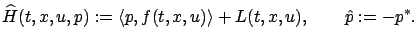
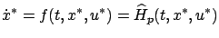
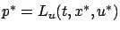
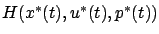
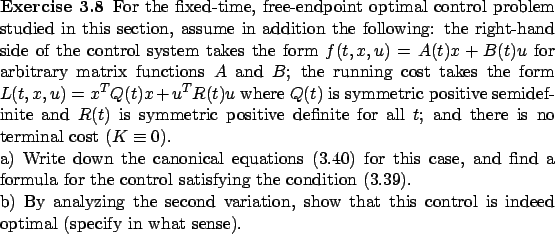

We remark that we could define the Hamiltonian and the adjoint vector using a different sign convention, as follows:

Then the function
would have a minimum at

and
At first glance, this reformulation in terms of Hamiltonian minimization (rather than maximization) might seem more natural, because we are solving the minimization problem for the cost functional
Note that the necessary conditions for optimality from
Section 3.4.3 are formulated as an existence
statement for the adjoint vector  which arises directly as a
solution of the second differential equation
in (3.40); this is in contrast with
Section 2.4.1 where the momentum
which arises directly as a
solution of the second differential equation
in (3.40); this is in contrast with
Section 2.4.1 where the momentum  was first
defined by the formula (2.28) and then a differential
equation for it was obtained from the Euler-Lagrange equation. In
the present setting, (3.39) and (3.40)
encode all the necessary information about
was first
defined by the formula (2.28) and then a differential
equation for it was obtained from the Euler-Lagrange equation. In
the present setting, (3.39) and (3.40)
encode all the necessary information about  , and we will find
this approach more fruitful in optimal control. Observe that in
the special case of the system
, and we will find
this approach more fruitful in optimal control. Observe that in
the special case of the system  which corresponds to the
unconstrained calculus of variations setting, we immediately
obtain from (3.29) and (3.39) that
which corresponds to the
unconstrained calculus of variations setting, we immediately
obtain from (3.29) and (3.39) that
 must be given by
must be given by

, and the momentum definition is recovered (up to the change of notation). This implies, in particular, that the Weierstrass necessary condition must also hold, in view of the calculation at the end of Section 3.1.2 (again modulo the change of notation).The total derivative of the Hamiltonian with respect to time along an optimal trajectory is given by

must remain constant. If we want to think of
We know that, at least in principle, we can obtain a second-order
sufficient condition for optimality if we make appropriate
assumptions to ensure that the second variation
 is positive definite and dominates terms of order
is positive definite and dominates terms of order
 in
in
 . While in
general these assumptions take some work to write down and verify,
the next exercise points to a case in which such a sufficient
condition is easily established and applied (and the necessary
condition becomes more tractable as well). This is the case when
the system is linear and the cost is quadratic; we will study this
class of problems in detail in Chapter 6.
. While in
general these assumptions take some work to write down and verify,
the next exercise points to a case in which such a sufficient
condition is easily established and applied (and the necessary
condition becomes more tractable as well). This is the case when
the system is linear and the cost is quadratic; we will study this
class of problems in detail in Chapter 6.
